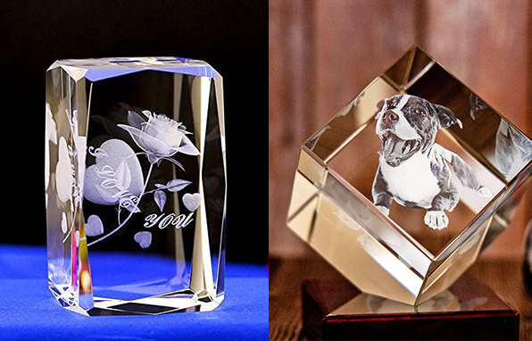
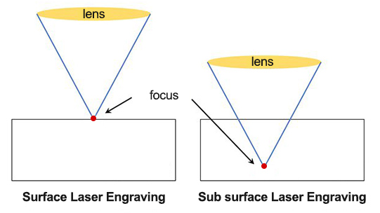
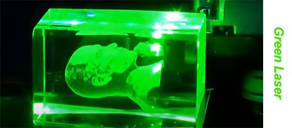

Якщо говорити про лазерне гравірування, ви, можливо, маєте про це великі знання.За допомогою фотоелектричного перетворення, що відбувається з лазерним джерелом, збуджена лазерна енергія може видалити часткові поверхневі матеріали для створення певної глибини, створюючи візуальний 3D-ефект із колірним контрастом і увігнуто-опуклим відчуттям.Однак це зазвичай вважається поверхневим лазерним гравіюванням і має істотну відмінність від справжнього 3D лазерного гравіювання.У статті на прикладі фотогравірування буде показано, що таке 3D лазерне гравіювання (або 3D лазерне травлення) і як воно працює.
Як і на зображенні вище, ми можемо знайти їх у магазині як подарунки, прикраси, трофеї та сувеніри.Здається, що фотографія плаває всередині блоку та представлена у вигляді 3D-моделі.Ви можете бачити його в різних видах під будь-яким кутом.Ось чому ми називаємо це 3D-лазерним гравіюванням, підповерхневим лазерним гравіюванням (SSLE) або 3D-гравіруванням кристалів.Є ще одна цікава назва «бульбашка».Він яскраво описує крихітні точки зламу, утворені лазерним впливом, як бульбашки.Мільйони крихітних порожнистих бульбашок складають тривимірне зображення.
Звучить дивовижно та чарівно.Це саме точна та безпомилкова лазерна операція.Зелений лазер, збуджений діодом, є оптимальним лазерним променем для проходження через поверхню матеріалу та реакції всередині кристала та скла.Тим часом розмір і положення кожної точки повинні бути точно розраховані та точно передані на лазерний промінь із програмного забезпечення для лазерного 3D-гравірування.Ймовірно, 3D-друк представляє 3D-модель, але він відбувається всередині матеріалів і не впливає на зовнішній матеріал.
Деякі фотографії як носії пам'яті зазвичай вигравірувані всередині кришталю та скляного куба.Машина для лазерного гравірування кристалів 3d, хоча для 2d зображення, вона може перетворити його на 3d модель, щоб надати інструкції для лазерного променя.
Зелений лазер можна сфокусувати всередині матеріалів і розташувати будь-де.Для цього потрібні матеріали з високою оптичною прозорістю та високим відображенням.Тому перевагу надають кришталю та деяким видам скла з надзвичайно прозорим оптичним рівнем.
На щастя, технологія зеленого лазера існує вже давно та оснащена підтримкою зрілих технологій і надійним постачанням компонентів.Тож машина для лазерного 3D-гравірування може надати виробникам чудову можливість для розширення бізнесу.Це гнучкий інструмент для створення унікальних пам'ятних сувенірів.(3d фотокристал гравірування зеленим лазером)